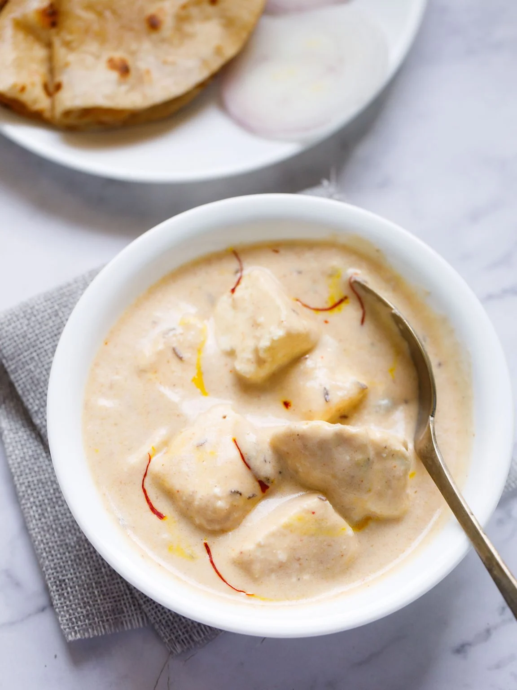

Paneer

How to make restaurant style shahi paneer at home
A classical and premium north indian or punjabi curry made with paneer in dry fruit sauce. Unlike other traditional paneer based curries, this curry is more creamy and sweet in taste due to the use of dry fruits.
It is an ideal gravy based curry which can be easily served with choice of roti’s, bread and also with rice options.
Ingredients:
- 1 tbsp butter
- 3 cloves
- 1 bay leaf
Steps:
- First, in a kadai heat 1 tbsp butter and saute 2 pods cardamom, 1 inch cinnamon,1 pod black cardamom and 3 cloves.
- Further, add 2 tomato and saute slightly.
- Sieve the puree making sure the puree is smooth and silky. keep aside.